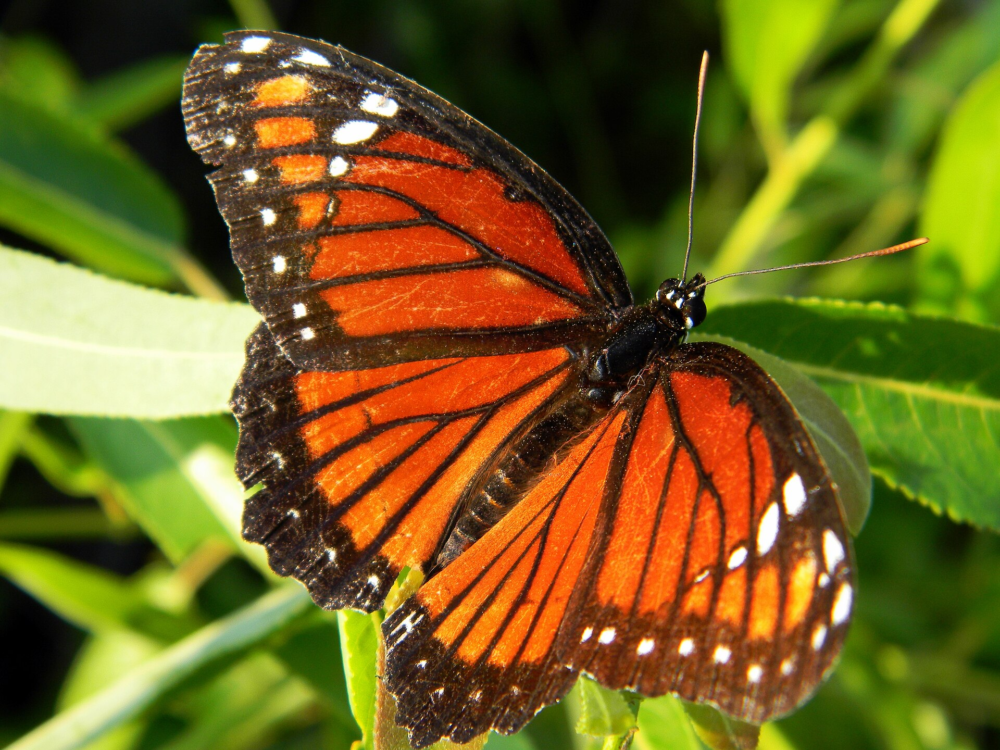
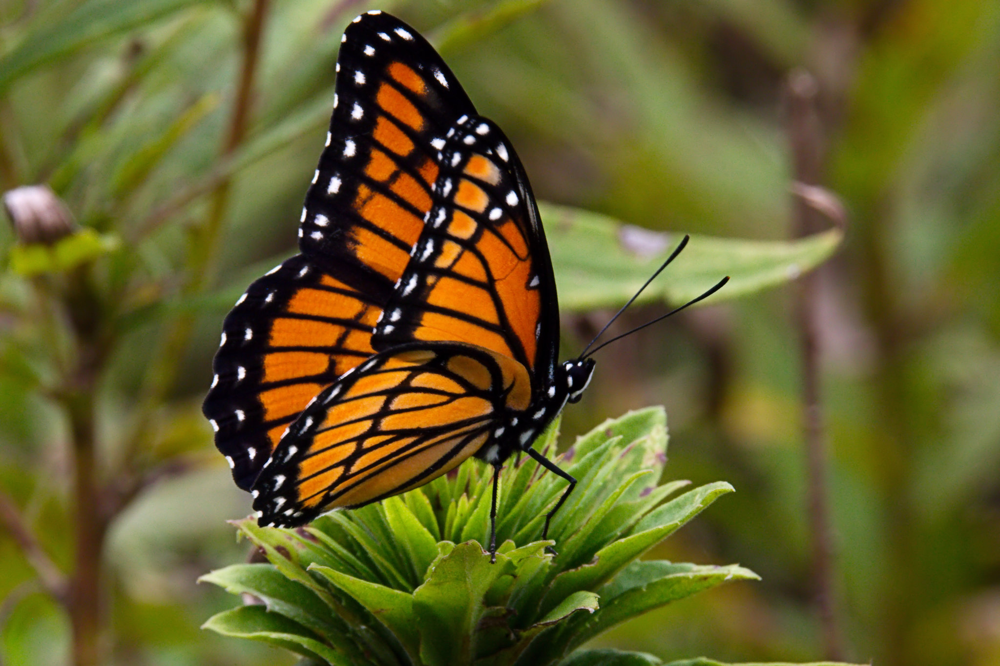
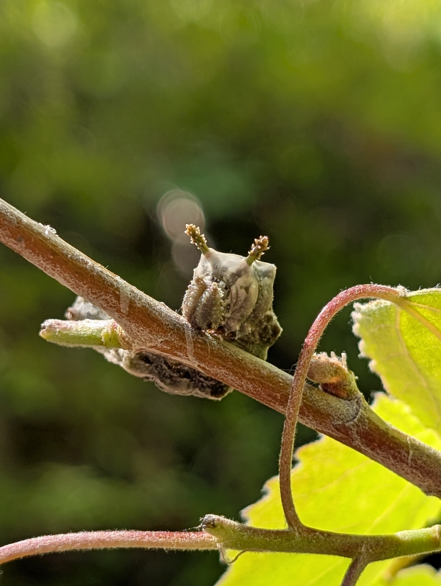

Limenitis archippus
PossibleThe point of this card is the look-alike. Florida Viceroys often run dark, Queen-colored. Check for the black line across the hindwing. Willows along fresh water, not milkweed.


Wet edges, freshwater canals, marshes, preserves. Not a dry lawn butterfly.
Willows
Salix spp. especially Carolina willow Salix carolinianaThe hindwing black line is the mark.